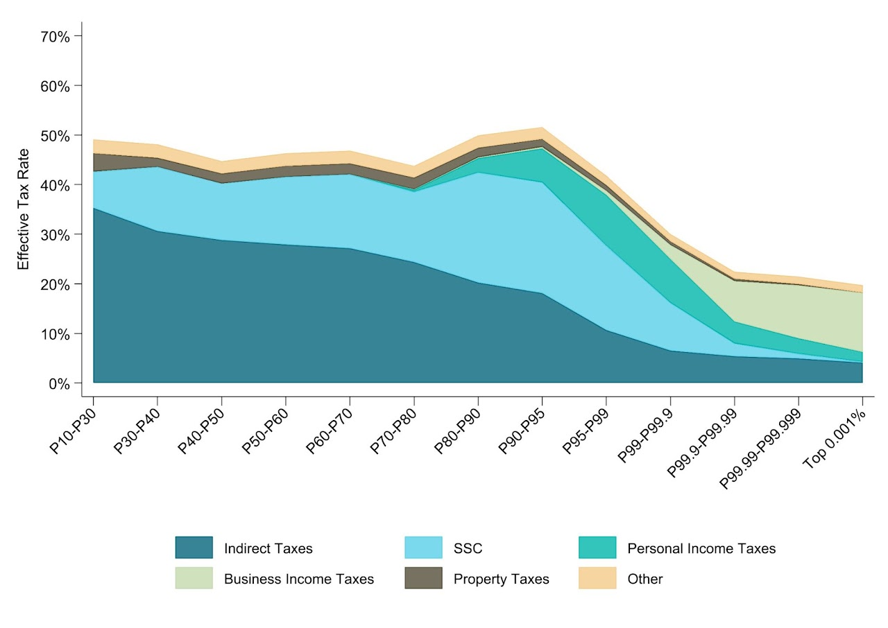

Tax Progressivity and Inequality in Brazil: Evidence from Integrated Administrative Data
Abstract
We use population-wide administrative micro-data to provide new estimates of income inequality and effective tax rates by income groups in Brazil, capturing all income and all tax payments. Our data allow us to link businesses to their owners and thus to allocate business income and associated taxes to the corresponding individual firm owners. We provide sharp upward revisions to official inequality estimates: the top 1% earns 27.4% of total income in 2019, one of the highest levels recorded in the world.
The tax system, which relies heavily on consumption taxes, is regressive: while the average tax rate in the economy is 42.5%, this rate falls to 20.6% for million-dollar earners (roughly the top 0.01% of the distribution), due to the non-taxation of dividends and provisions that reduce corporate tax liabilities.
We provide evidence suggesting that inequality in developing countries may be systematically underestimated, as even in Brazil—where dividends are untaxed, and hence incentives to retain income within companies are limited—attributing profits to business owners substantially raises income inequality.
Figure

Presentations
Stone Center Conference (Paris); Workshop on the Economics of Taxation (Barcelona); Seminário Oxfam e Sindifisco Nacional (Brasília); 7th World Bank/ODI/IFS Public Finance Conference (London); PSE Applied Seminar (Paris); 47º Encontro da Sociedade Brasileira de Econometria, SBE (São Paulo); PUC-Rio Seminar (Rio de Janeiro); World Inequality Conference 2026 (Paris); 2026 IIPF Congress (Lisbon, presented by a coauthor).
Media coverage Financial Times · Folha de São Paulo · Valor Econômico · CNN Brasil